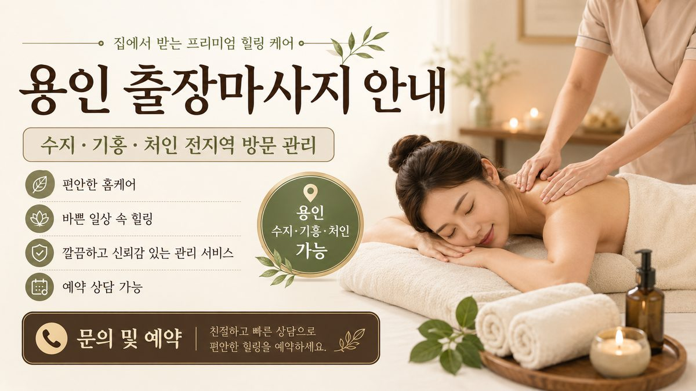

용인은 처인구·기흥구·수지구 세 개 구로 이루어진 면적이 넓은 도시입니다. 같은 ‘용인’이라도 구에 따라 생활 모습과 이동 거리가 크게 달라, 출장마사지에서는 동네를 구체적으로 알려주시는 것이 도착 시간을 가장 크게 좌우합니다. 67 마사지의 용인 권역 운영 경험을 정리했습니다.
용인은 구 사이 이동 거리가 길어, 같은 시 안에서도 도착 시간이 달라집니다. 예약 시 죽전·기흥역·김량장동·포곡처럼 동네를 구체적으로 주시면 가장 가까운 관리사를 배정해 도착을 앞당길 수 있습니다. 외곽 단독·전원주택은 진입로 안내를 함께 주시면 좋습니다.
강남 출퇴근이 잦은 수지는 누적된 목·허리를 푸는 90·120분 전신이, 연구·생산직이 많은 기흥은 어깨 긴장을 다스리는 아로마가 잘 맞습니다. 처인·포곡 전원 주택에서는 시간을 넉넉히 잡는 120·150분 장코스 만족도가 높습니다.
수지·기흥은 평일 저녁 예약이 몰리고, 처인·포곡 외곽은 주말 장코스 비중이 큽니다. 이동 거리가 있는 외곽은 출발 시 예정 시간을 다시 안내드립니다.
용인은 ‘어디인지’를 정확히 주실수록 빠르고 정확하게 방문할 수 있는 도시입니다. 67 마사지는 수지·기흥·처인 전역을 단일 정찰 권역으로 운영하며, 권역 내 별도 출장비가 없습니다.
처인구 외곽이나 포곡의 전원주택·펜션은 도로명 주소만으로는 진입로가 헷갈릴 수 있습니다. 큰 길에서 들어오는 방향, 주차 위치, 대문·현관 위치를 한 줄로 적어 주시면 헤매지 않고 도착합니다. 이동 거리가 있는 만큼 출발 시점에 예정 시간을 다시 안내드립니다.
도시가 넓다 보니 ‘도착 시간이 정확한지’를 가장 중요하게 여기는 분이 많습니다. 그래서 67 마사지는 용인에서 가장 가까운 관리사 배정과 도착 예정 시간 안내를 특히 신경 씁니다. 동네만 정확히 주셔도 약속 시간을 지키기가 훨씬 수월합니다.
용인은 같은 시라도 수지에서 처인구 외곽까지는 차로 30~40분 이상 차이가 날 수 있습니다. 그래서 예약 때 동네를 구체적으로 주시면, 가장 가까운 관리사를 배정해 실제 도착 가능 시간을 정확히 안내드릴 수 있습니다. ‘지금 바로’가 급하다면 가까운 권역의 가능 여부를 먼저 확인해 드리고, 외곽은 여유 있게 예약하시는 편이 안정적입니다.
요약하면, 용인에서는 ‘구·동을 구체적으로’ 알려주시는 것 하나가 도착 시간과 만족도를 가장 크게 좌우합니다.